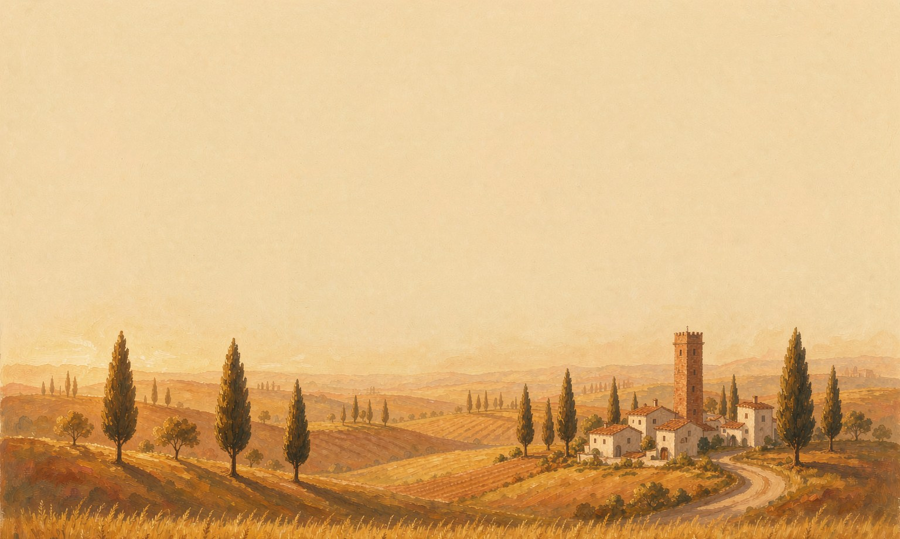
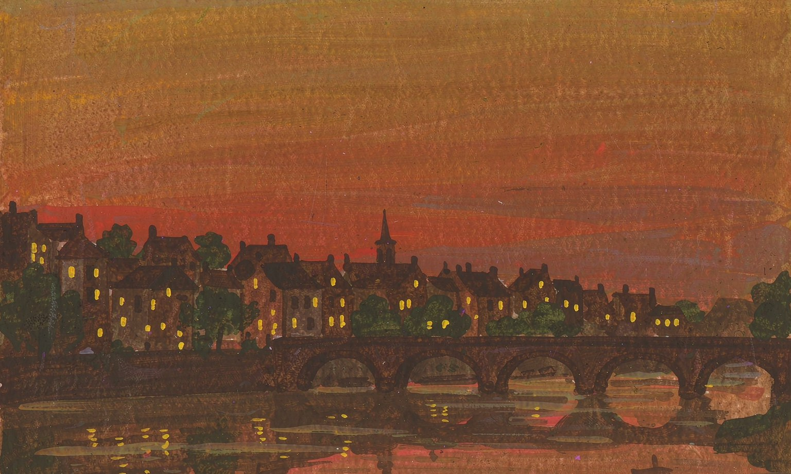
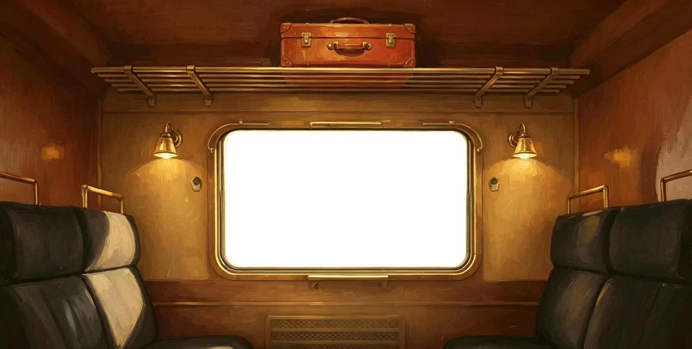

03 · MY WORKS
§我的作品
点击「发车」，车窗拉起——列车将途经五个站台。上下滚动或点两侧按钮切换站台，每一站，都是一件作品。


THE PORTFOLIO JOURNEY
作品之旅
五个站台
五个把想法变成产品的瞬间，即将到站

华南理工大学 软件学院
02 · ABOUT ME
03 · MY WORKS
点击「发车」，车窗拉起——列车将途经五个站台。上下滚动或点两侧按钮切换站台，每一站，都是一件作品。


THE PORTFOLIO JOURNEY
五个把想法变成产品的瞬间，即将到站

04 · GROWING UP
——我一路走来的时光
05 · CONTACT
联系我，看我能为你做些什么
点击文件夹 · 取出联系方式
SPECIAL THANKS
特别鸣谢 @浪尖社区
带我打破信息差，与志同道合的朋友结伴成长